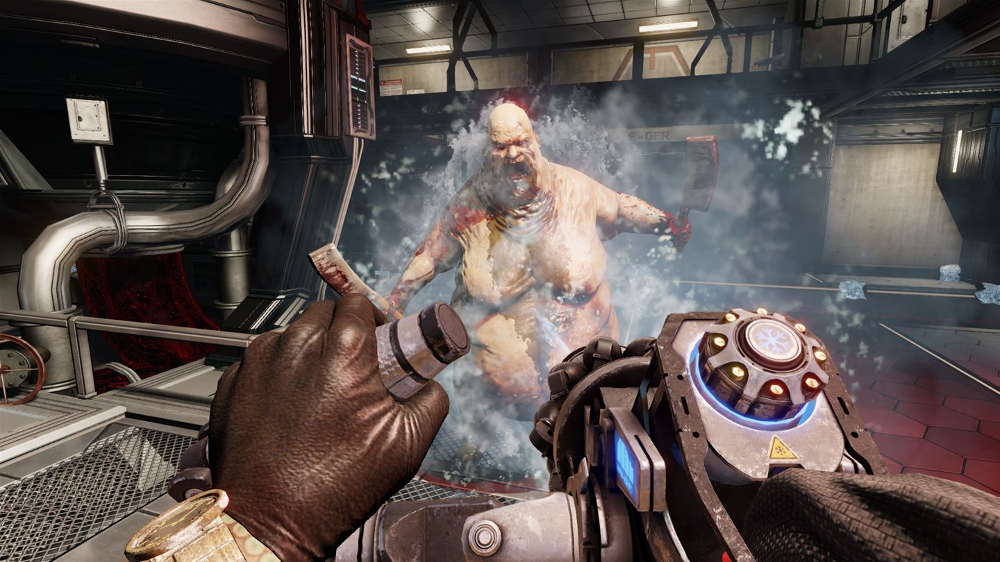

2009 släpptes Killing Floor där både spelet och Tripwire skaffade sig en lojal skara fans trogna till Killing Flooor franchaisen. I augusti 2017 släpptes den efterföljande uppföljaren Killing Floor 2, med uppdaterad spelmotor, grafik, och bandesign.
Zombiedödar-coop
Killing Floor 2 är en first-person shooter som kan spelas antingen själv eller co-op med upp till 6 andra spelare. Handlingen baseras på händelser från Killing floor, där ett bio-tech företag vid namn Horzine försökte skapa militära cloner men en galen forskare tog över och släppte loss klonerna över hela Storbritannien. Klonerna spred sig över hela landet och sedan över till Europa. I Killing Floor 2 har de spridit sig över hela världen och hela länder har kollapsat.
Spelet betår av att spelare kämpar sig genom vågor av "zeds". Allteftersom vågorna avslutas ökar zedsantalet, olika typer av zeds dyker upp och allting kulminerar i en "bossfight" i sista vågen för att klara banan.
Bandesign och "story"
Låt oss börja med banorna, vilka är både talrika och ytterst detaljerade. De är dessutom stora så det finns gott om plats att gå omkring för att hitta Zeds att dräpa. Varje våg innehåller ett visst antal fiender där antalet varierar beroende på hur många ni är i gruppen, och när den klarats av får du möjlighet att fylla på förråden av livsnödvändigheter. Har du tjänat nog med pengar kan du också uppgradera din utrustning.
En annan sak som hade varit trevlig är mer story. Det kunde ha skickats med via text- eller ljudfiler eller ännu hellre mellansekvenser, eller till och med bilder med text på laddskärmarna mellan omgångarna (de är rätt långsamma både till PC och Playstation 4 Pro). Det finns helt enkelt inte nog med substans för att jag ska bry mig om karaktärerna som mer än avatarer. Lyckligtvis är de många dock och det går också att ändra deras utseende för att göra det lite mer personligt (och som sagt, öppnar du plånboken får du ännu mer möjligheter).

Och med dessa petitesser är mina klagomål i princip slut, så låt oss glida över till något roligare - själva striderna. Det är faktiskt så att Killing Floor 2 har bland de mest tillfredsställande skjutmekanikerna i ett spel någonsin. Det finns en enorm arsenal krutpåkar och nästan samtliga är roliga att använda. Dessutom är det betydande skillnader mellan varje vapen så det finns något för alla smaker. Själva träffavkänningen fungerar också mycket bra och mellan varven går spelet över i en slow motion-sekvens vilket ger ett gyllene tillfälle att fyra av några perfekta head-shots, mitt i plytet.